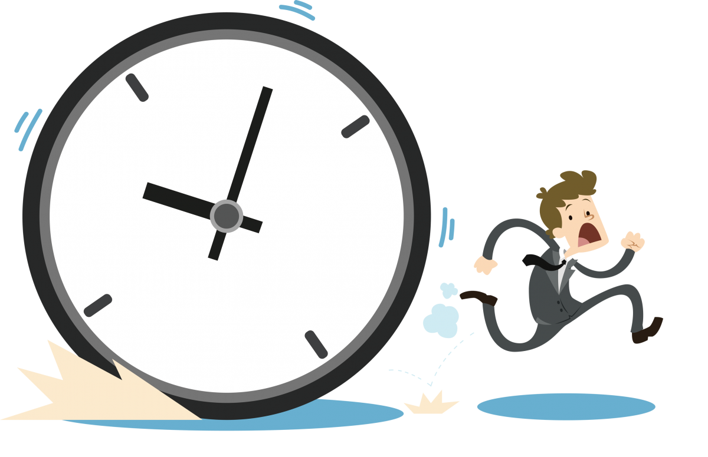
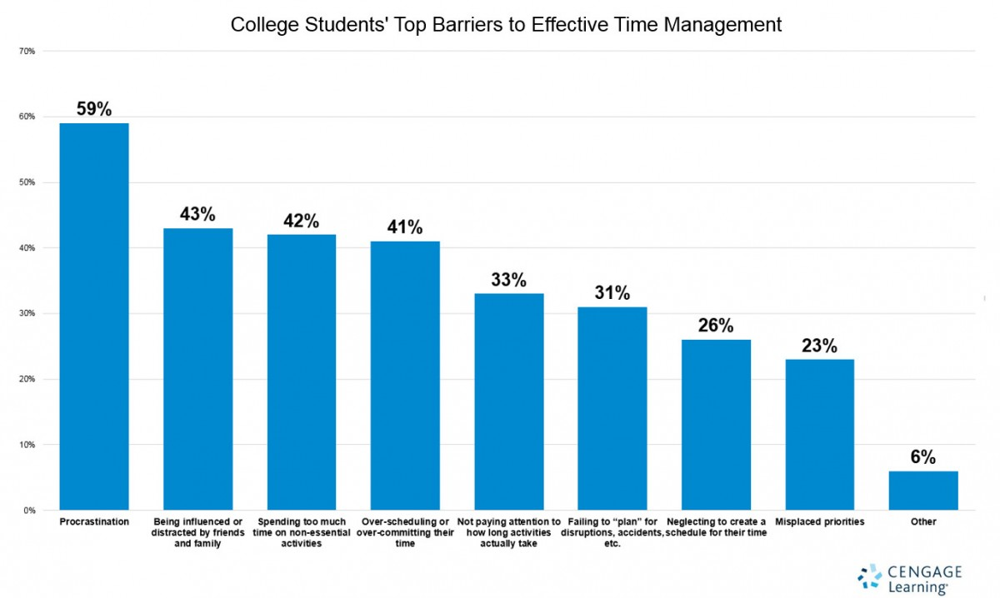
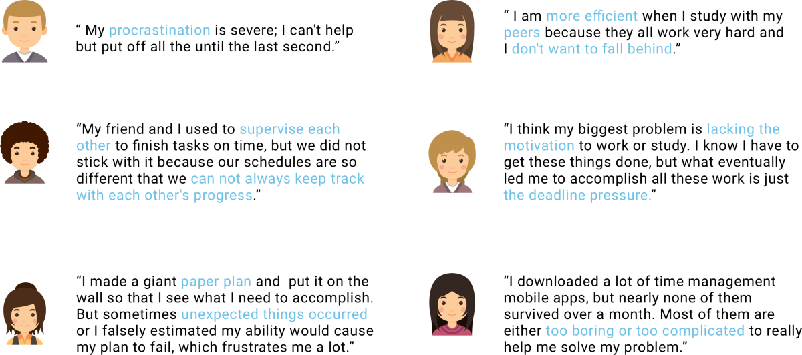
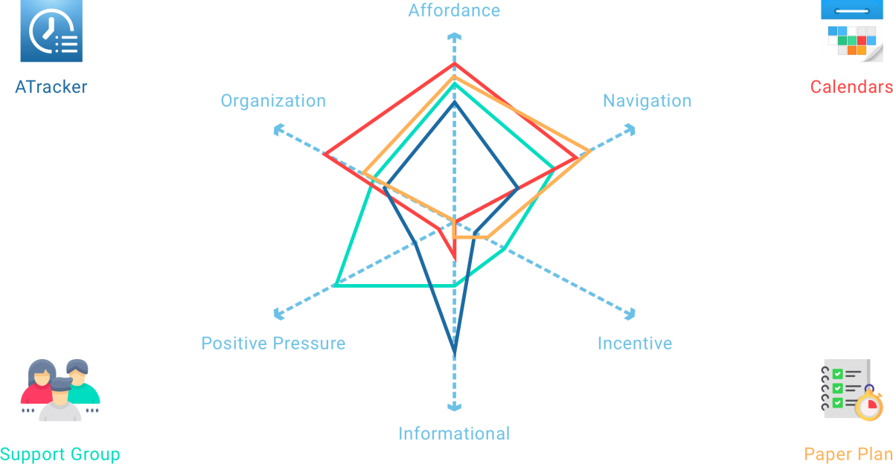
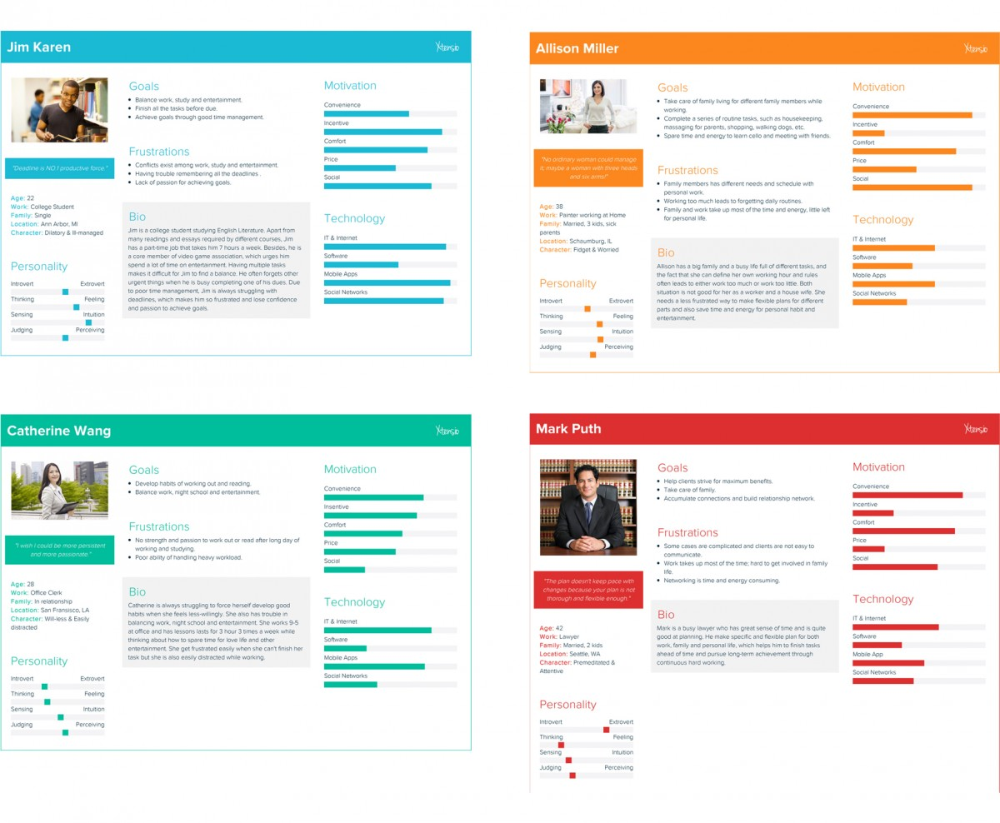
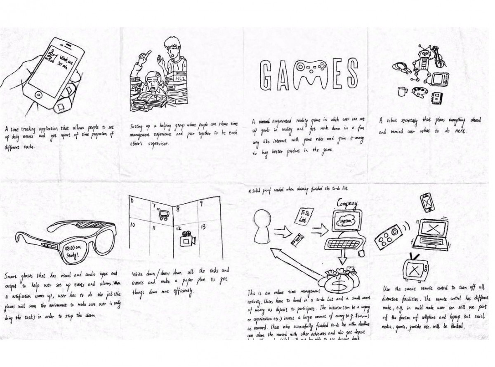
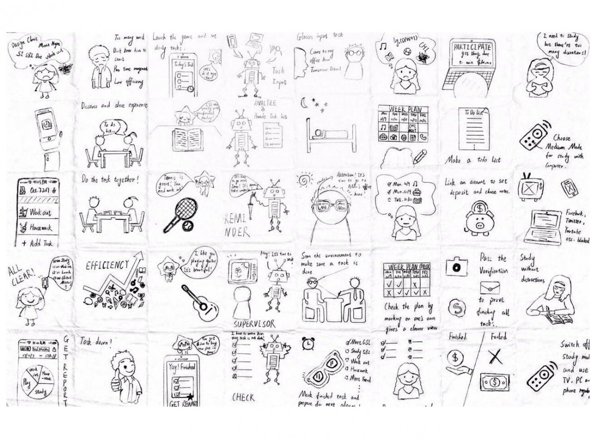
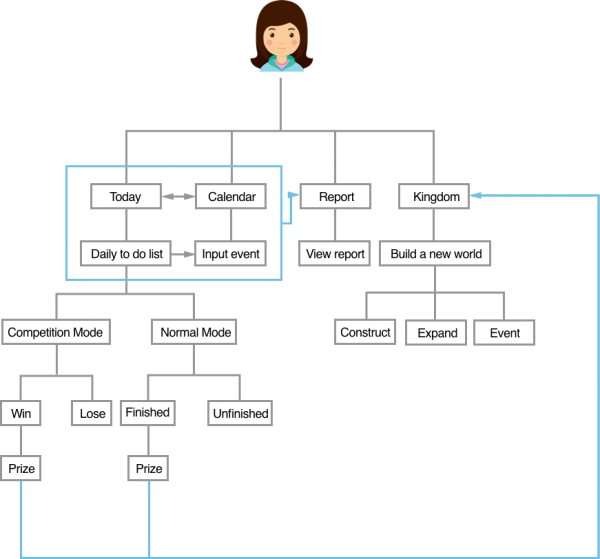
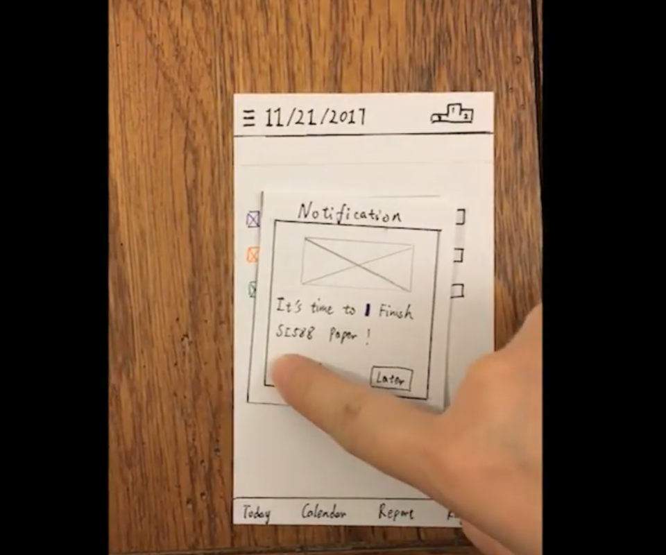

Design Process
Problem statement
Like many college students, I am having trouble with time management. Massive course load, school activities, party with friends, and there’s a part-time job, I find it hard to balance them all. And when I look around, I find out that I am not alone, similar problems plagued almost all of the students. Everyone is trying to make some changes: looking for peer support, making personal plans, and downloading apps that improve time management, etc.. However, these don’t seem to be very helpful, as everyone is still frustrated when facing various deadlines.
Research
I first did some research online and found that many agencies have conducted research on student’s time management issues. Among them, an article published by Cengage caught my attention. They did a survey and found out that over 80% college student is having trouble in time management, and the top barriers to effective time management are procrastination, distraction, and poor planning.
Then I interviewed six students and wished to get answers to two questions from their responses: What do they think led to their time management issues? Why did the solutions they have tried fail?
According to the interview, I learned that user needs and pain points are focused on affordance, organization structure, information, incentive, etc.. I selected four of the most popular solution for poor time management that my target users have tried, and use user’s top 6 concerns as a standard to conduct a competitive analysis.
I got some insight through research
- Users need more than just planning; they need more useful information to help them understand their time management goals and status.
- One of the reasons that lead to user’s procrastination is the lack of positive pressure and reasonable incentives.
- Making time management a little bit more joyful will motivate users to get their job done.
Persona
Through research, I deepened my understanding of the characteristics and needs of users and developed three target users’ persona and one anti persona. Later when I was working on specific features, I frequently referred to primary and secondary personas, which ensured me always to bear the needs of users in mind and not to overweight my preferences to user’s real idea. At the same time, I also checked my anti persona when there was a new idea, which helped me to distinguish what functions did not serve my target audience, then I need to delete these useless features.
Brainstorming
With target user and directions for improvement been identified, I sketched some alternatives that matched user’s needs and expectation, and further portrayed possible user scenarios for these solutions.
 After sketching, I confirmed that I eventually wanted to design a mobile application to help solve student’s time management issue. This application needs to meet the following goals:
- Let users be aware of different deadlines.
- Encourage users to break down complex tasks, and complete these tasks step by step.
- Allow users to understand their own time management goals and status conveniently.
- Use stress and incentive reasonably to encourage users to act now.
- Make user experience both friendly and fun.
System map
Based on these goals, I identified the main functions of the TIMO and plotted the structure of this app.
QOC
Here I got a chance to think about the feature I wanted to have in my design and reasons behind my choice. When I drew the QOC chart, I started to link individual elements and reconsider my former option based on both positive and negative criteria. During this process, I settled down some critical features for the competition function.


Paper Prototype & User Testing
At this stage, I have confirmed the function of TIMO and the corresponding manifestations, so I made the paper prototype and conducted a basic user test. The goal of the test is to successfully have the user navigate within the app to different modules, create a new task in their to-do lists, get the notification and finish the task, participate a competition, to check the report, and construct their own kingdom.
VIEW VIDEO